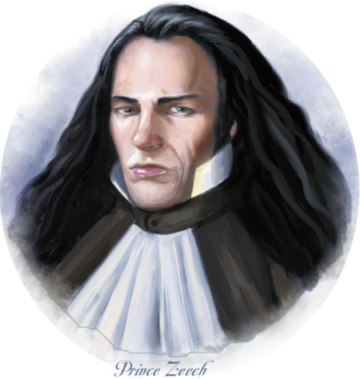
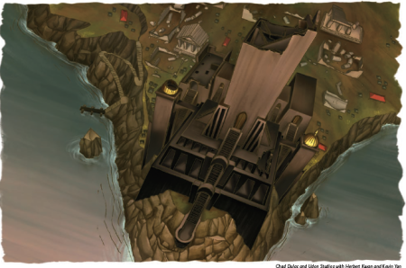
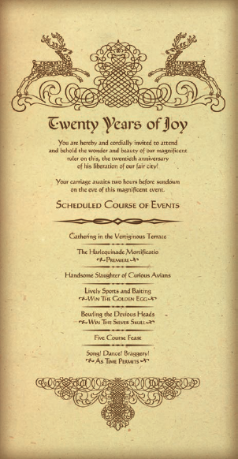

Week 36 - The excellent and most joyous city of Alhaster
We finished off SLS during this week, but I have included it in last weeks notes. Unfortunately, my players spent much of this adventure shopping for cheese, flicking though the MIC while I was reading colour text. Added to that is that I find running an urban game a little intimidating - I’m not really much of a roleplayer. We got a few things done however.
Manzorian’s library has a book “A History of Alhaster”, written by a cleric of the Silver Flame named Rhorsk only a few months before a despotic ruler named Prince Zeech seized Alhaster and Redhand from the previous despotic ruler . One section of A History of Alhaster recounts the emergence and influence of a cabal of heretics who attempted to establish an underground cult somewhere in the city, a cult dedicated to the ascension of their god into something greater. This cult made particular use of what they called “the Writhing Dead.” The cult was defeated with the aid of one of Alhaster’s greatest spellcasters, an elven noble named Lashonna, but its leaders escaped persecution. In the margins of this account, Balakarde made a fairly extensive note, a copy of which Manzorian hands to the PCs to study. The best route, Manzorian suggests, is to check up on the leads Balakarde indicates in his notes.
In Eberron, Hextor, Vecna, and Erythnul are replaced by The Mockery, The Shadow, and The Keeper respectively. St Cuthbert becomes The Silver Flame, and Kord is replaced by Dol Dorn. The temples of Wee Jas who run the various graveyards are replaced by a sect called “The Watchful Rest” who venerate Aureon and The Keeper. They see their main job in life as being making sure that the dead stay dead.
The party take a good look at a map of Khorvaire, and decide to have Jericho Greater Teleport them to the gates of Alhaster.

Well as is always the case in this genre, the town of Alhaster is preparing for a celebration as the characters arrive. It’s the 20th anniversary of the start of his rule. The town is frantic with activity - bunting, stalls, streetcleaning and so on. Alhaster is a happy town. Prince Zeech, it turns out, is a wise and beneficent ruler whose laws are enforced by a band of actual angels - extraplanar visitors rare in Eberron. The party secure lodgings and begin to investigate, learning the layout of the city and its facilities and acquiring the following information in no particular order:
- There’s a magic shoppe, where you can buy and sell pretty much anything - up to the usual limit, in Ebberon, that greater magic items are just flat out not for sale. For money, at least.
- There’s a butcher’s shop, where rare meats are sold (owlbear, dragon, you name it). The proprietor, a halfling, is rumored to be a cannibal.
- There’s a boneyard, presided over by “the Crimson Spire”, a temple of The Watchful Rest.
- There’s Prince Zeech’s “Great Project”, of which we shall speak more anon.
- Prince Zeech is particularly dedicated to The Mockery, and the largest temple in town is a temple of The Mockery. But all faiths are welcome to come there and worship as they wish.
- Speaking of temples, there’s a temple of Dol Dorn, which has fallen on hard times, and the ruined temple of The Silver Flame. This temple opposed his rule, and is abandoned.
- There’s an Arena. Not so grand as the Sharn arena, but big enough and well patronised.
- There’s an expensive inn/club/brothel in town - The Deluxury. Accommodation can run to 1000gp a night, but it includes everything.
- There’s some noble houses, the castle, the barracks and the Angels Aerie in the good part of town. Lashonna’s estate is one of them.
- Lashonna is Prince Zeech’s main advisor - the most important person in the city, second to the prince.
- Most dead are buried in the graveyard. Traitors and Ebon Triad cultists, however, are hanged and their corpses left to rot at the Traitors Graves, outside the city.
And maybe a few things I have missed. Far more importanty, Flash and Frith perceive that the joy and happiness in the town is largely faked. But everyone keeps up the facade. And people are outright scared of the Blessed Angels.
Flash hears a couple of rumours:
- “A patrol of Blessed Angels seized a cratefull of the latest copy of the Sinchaser Report and took the bookseller who had stored the crate in his shop into their Aerie a week ago. No one’s heard from him since. Good riddance, I say!”
- “I’m not sure that allowing the Scarlet Spire such autonomy in the disposal of the dead is a great idea. I heard they’re building an army of undead in chambers below the boneyard and plan to use these monsters to stage a coup. I’m sure Prince Zeech knows what he’s doing in letting them handle the disposal of the dead, but still…”
 The party elect to visit this “Great Project”. With shock, they discover that this project is a Ziggurat with a spire atop it, looking very, very much like the Spire of Long Shadows. It will be a matter of months before it is completed.
The party clean themselves up and attempt to drop in on Lashonna. The lady is unavailable, however the guard takes a shine to Flash and suggests that he secure invitations to the Prince’s banquet, which Her Ladyship s certain to attend. It’s fairly well known that the owner of The Deluxury has some spare invitations to give out, and so the party decides to try to score one from there.
That night, they visit The Deluxury in disquise, drinking and gambling. They fail to attract the owner’s attention and so resort to just asking him. The owner insists on interviewing them in private, and they agree. As the owner is looking for flashy adventuring types, they drop their disquises, revealing themselves to be the champions of the Sharn Champion’s Belt games. And good with a spell or two, to boot. Armhin is happy with all of them except for Gauthakan (who is a little uncouth), and gives them all invitations. Flash will be responsible for Gauthakan’s behaviour.
And with that, their invites are secured. There’s a momentary question about the “Braggery”, but it turns out to be a misunderstanding.
A fine example of not-very-good DMming. I should have let their ruse work, rather than running the encounter as written and making it obvious that they were always going to get invites, anyway.
Next day, they decide to investigate the graveyard. But first, Flash hears another rumour:
- “There’s something strange about the Temple of the Silver Flame. My cousin heard someone crying in the chapel one day, but wasn’t brave enough to look inside. I think the place is haunted.”
The party decide to investivate the temple. Entering disguised as crows they discover a hidden trapdoor below which is a stair leading down to a crypt. There is a ghoul there, that shreiks and gibbers at them, ordering them to leave. As Frith is uncharacteristically silent, Gauthakan grapples the thing, swiftly pinning him. It struggles to escape. Flash uses a Charm Monster and calls Gauthakan off. The ghould turns out to be Rhorsk, who - the party determine - has no idea that he has become a ghoul. Rhorsk discovered that the Ebon Triad cultists were operating out of a building in the city, whose adress he gives, and taking directions from “mother maggot”. He has no idea who “mother maggot” might be. The party leave him to his own devices.
Well! Got enough hooks? I think I missed a couple, too.